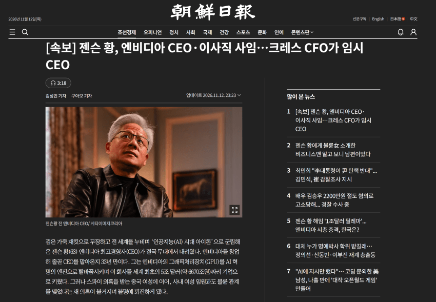
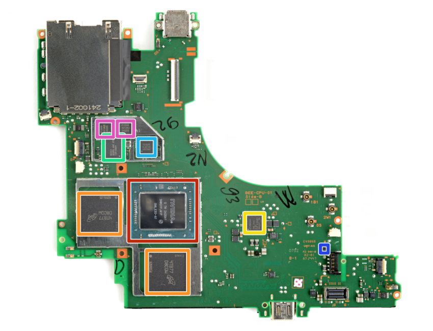
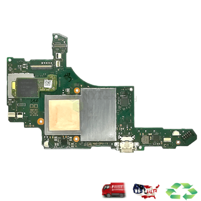
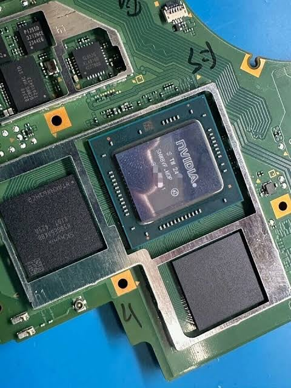
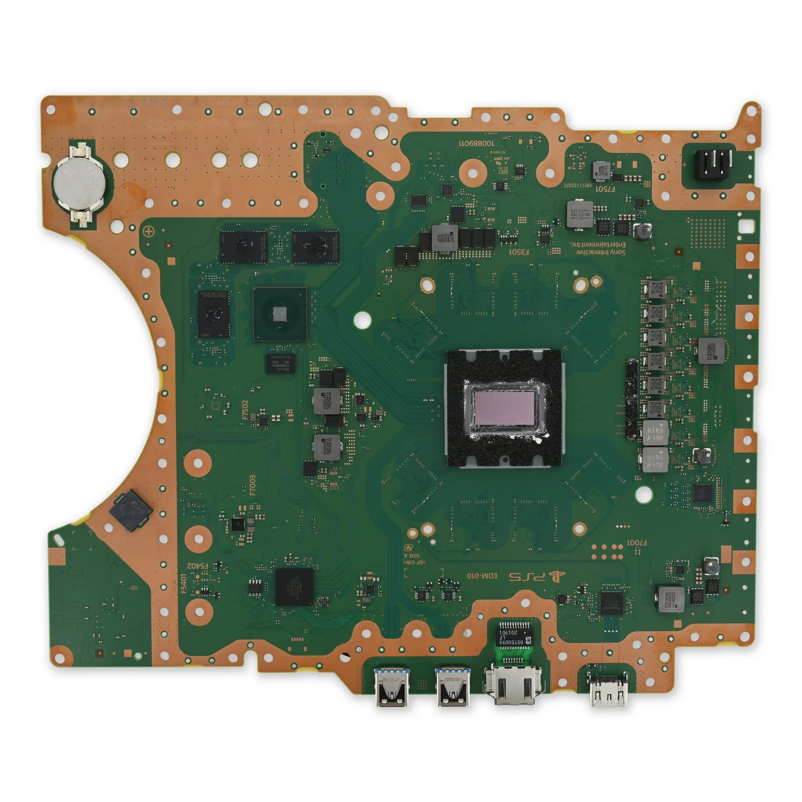
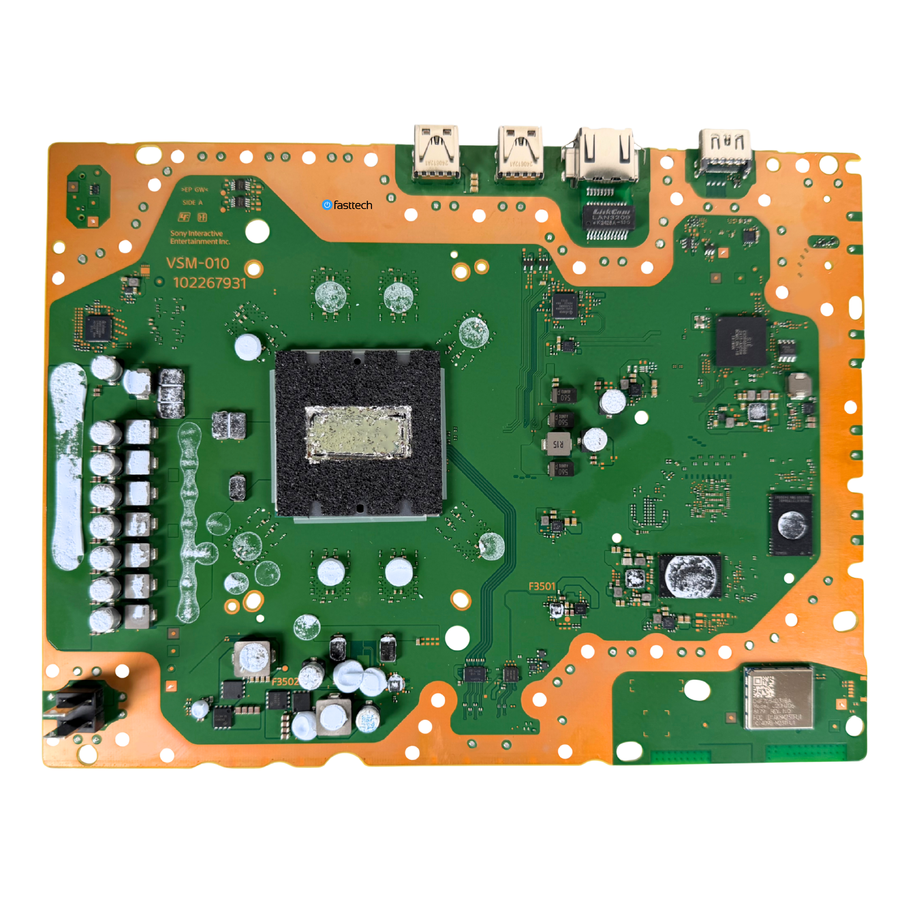
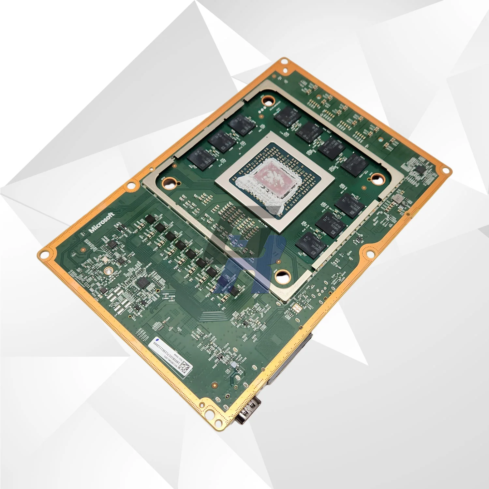
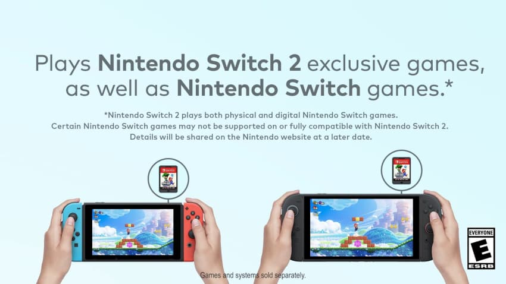
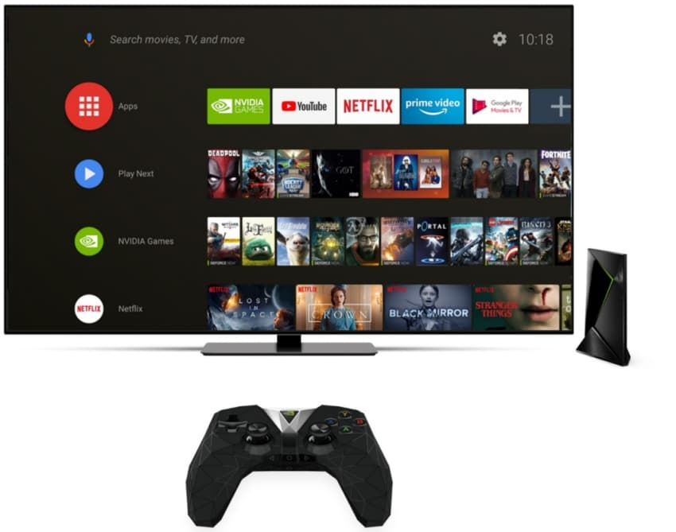

젠슨 황 아저씨가 존슨 황을 못참아서 결국 사임하셨습니다
근데 왜 닌갤이 벌벌 떠냐고요?

(스위치 2 메인보드)

(스위치 1 메인보드)
닌텐도 스위치는 콘솔의 심장이 되는 APU의 생산을 전적으로 엔비디아에 맡기고 있기 때문입니다
스위치 1은 Nvidia Tegra X1 칩, 스위치 2는 Nvidia Tegra T239 칩셋을 사용중
AI 칩셋 만든다고 엔비디아 공장이 지금 365일 245시간 풀로드로 돌아가고도 AI 데이터센터 수요를 못 채우는 상황인데, 사실 이것 때문에 엔비디아 RTX 5000 시리즈 소비자용 PC GPU를 비롯한 B2C 소비자용 칩셋 제품군은 게이머 출신에 너드 끼 다분하시던 황회장님의 성향 덕에 아직까지도 생산이 유지되고 있고, 재무재표쟁이들이 결정권을 쥐게 되면 돈도 안되는거 싹 내친다는 무시무시한 상황이 생길수도 있기 때문이에여

그나마 다행이라면 스위치 2가 사용하는 T239의 제조공정은 최신 AI GPU보다 몇세대 전 모델인 8nm 공정으로 제작되는 물건이라 RTX 5000시리즈보다는 이거 안만든다고 공정을 AI로 돌릴 수 있는 칩셋도 아니고, 콘솔 계약 특성상 5~10년짜리 대기업간 장기계약이라 이걸 엔당이 일방적으로 파기하는건 좀 힘들지 않겠냐는 의견이 있긴 합니다
물론 차기 회장님이 "뭉게" 하면 뭉갤수도 있긴 하겠지만 에이 설마

(PS5 보드)

(PS5 Pro 보드)

(XSX 보드)
참고로 옆동네 뜰스랑 엑박은 주요 칩셋 공급원이 리사 수 누나의 AMD라서 이번 상황에서는 상대적으로 안심입니다
RTX 5000 시리즈 없어지면 소비자 시장에서 최대 수혜를 볼 기업은 당연히 RX 9000 시리즈를 공급하는 AMD일거기도 하고요

참고로 콘솔 게임기의 하위호환은 기존 칩셋과 얼마나 신형 칩셋이 호환되느냐에 걸려있는게 큰데 (스위치 1-2가 하위호환이 엄청 잘되는 것 역시, 같은 엔비디아 테그라를 써서 그럼. 반대로 3DS, Wii U 게임이 스위치에서 안돌아가는 이유는 3DS는 SHARP에서 만든 ARM9 프로세서를, Wii U는 IBM PowerPC기반, AMD 공동제작 "에스프레소 프로세서"를 썼기 때문.)
스위치 2까지는 어떻게 만들더라도 차기 닌텐도 콘솔용 칩을 엔비디아에서 안만들어준다면 차세대 닌텐도 콘솔에서 스위치 1, 스위치 2 게임의 하위호환을 기대하기도 껄끄러운 시츄에이션이기도 합니다
어떻게 될지는 시간만이 알려주겠지만 좀 무시무시한게 사실

참고로 스위치 1용 프로세서였던 "테그라 X1"은 스위치 1 생산 외에는 사실상 엔비디아 쉴드 TV라는 엔비디아 자체제작 스트리밍 TV 박스 겸 안드로이드 게임기용으로나 쓰던 칩이었는데, 이거 돈 더럽게 안되던거라 단종수순을 밟게 되면 스위치 1의 생산중단이 예상보다 꽤 일찍 찾아올수도 있겠단 생각이 들어요
에휴
댓글
수집 당시 댓글 113개
ㅇㅇ · 11.13 00:40:51
· 물딩딩이 · 11.13 01:11:53
ㅇㅇ5 · 11.13 01:40:51
· ㅇㅇ10 · 11.13 20:03:40
ㅇㅇ6 · 11.13 01:47:23
· ㅇㅇ7 · 11.13 14:44:17
· ㅇㅇ9 · 11.13 17:14:19
· ㅇㅇ · 11.13 18:08:40
· ㅇㅇ · 11.13 22:01:05
ㅇㅇ · 11.13 02:18:15
ㅇㅇ · 11.13 02:21:33
ㅇㅇ · 11.13 03:19:24
nyasper · 11.13 07:38:35
· 곱슬안경 · 11.13 16:58:12
ㅇㅇ · 11.13 09:22:15
ㅇㅇ8 · 11.13 15:44:39
ㅇㅇ10 · 11.13 20:02:31
공정성장 · 11.13 20:46:32
· ㅇㅇ · 11.13 20:56:40
ㅇㅇ · 11.13 20:47:04
· ㅇㅇ · 11.13 20:50:36
· ㅇㅇ · 11.13 20:50:48
· ㅇㅇ · 11.13 20:51:25
· ㅇㅇ · 11.13 20:54:13
· ㅇㅇ · 11.13 23:38:29
· ㅇㅇ · 11.14 02:03:02
· ㅇㅇ · 11.14 02:07:13
· ㅇㅇ · 11.14 02:12:16
· ㅇㅇ · 11.14 02:12:55
· ㅇㅇ · 11.14 03:02:52
ㅇㅇ · 11.13 20:47:07
Doll · 11.13 20:48:04
ㅇㅇ · 11.13 20:48:17
· ㅇㅇ · 11.13 20:48:33
· ㅇㅇ · 11.13 20:48:39
· ㅇㅇ · 11.13 21:02:01
· ㅇㅇ · 11.13 21:47:43
· ㅇㅇ · 11.14 01:42:32
ㅇㅇ · 11.13 20:49:52
ㅇㅇ · 11.13 20:50:35
· ㅇㅇ · 11.13 20:51:07
ㅇㅇ · 11.13 20:52:07
ㅇㅇ · 11.13 20:53:19
· ㅇㅇ · 11.13 20:53:29
· ㅇㅇ · 11.13 21:15:12
· ㅇㅇ · 11.13 21:48:35
ㅇㅇ · 11.13 20:54:41
· ㅇㅇ · 11.13 21:00:10
· 야근고닉 · 11.13 21:28:21
· ㅇㅇ · 11.13 23:13:16
ㅇㅇ · 11.13 20:54:52
· 슈밤베르크 · 11.13 20:58:16
ㅇㄷ · 11.13 20:56:16
엔갤러 · 11.13 20:57:11
닌스퍼거
ㅇㅇ · 11.13 20:57:27
ㅇㅇ · 11.13 20:57:48
· 공정성장 · 11.13 21:12:51
슈밤베르크 · 11.13 20:59:06
· ㅇㅇ · 11.13 21:22:20
ㅇㅇ · 11.13 20:59:15
ㅇㅇ · 11.13 21:02:27
· 야근고닉 · 11.13 21:29:15
ㅇㅇ · 11.13 21:06:59
ㅇㅇ · 11.13 21:24:14
ㅇㅇ · 11.13 21:31:31
ㅇㅇ · 11.13 21:44:38
ㅇㅇ · 11.13 21:45:47
ㅇㅇ · 11.13 21:54:45
· ㅇㅇ · 11.13 21:54:58
ㅇㅇ · 11.13 21:55:51
JungNu · 11.13 21:55:56
ㅇㅇ · 11.13 21:57:16
· ㅇㅇ · 11.14 02:10:43
미쿠닷컴 · 11.13 22:08:37
ㅇㅇ · 11.13 22:18:14
어린이사랑 · 11.13 22:59:58
ㅇㅇ · 11.13 23:05:36
ㅇㅇ · 11.13 23:10:14
ㅇㅇ · 11.13 23:55:04
· ㅇㅇ · 11.13 23:55:16
ㅇㅇ · 11.14 02:02:04
ㅇㅇ · 11.14 02:10:50
ㅇㅇ · 11.14 02:10:54
ㅇㅇ · 11.14 02:37:17
· ㅇㅇ · 11.14 02:37:23
ㅇㅇ · 11.14 03:54:10
ㅇㅇ · 11.14 04:03:42
ㅇㅇ · 11.14 05:28:43
프라이데이나이트펑킨아시는구나 · 11.14 06:50:01
· 프라이데이나이트펑킨아시는구나 · 11.14 06:50:24
ㅇㅇ · 11.14 07:07:48
ㅋㅋㅋㅋ · 11.14 09:52:42
· 2222 · 11.14 09:53:50
ㅇㅇ · 11.14 09:55:23
ㅇㅇ · 11.14 10:52:11
ㅇㅇ · 11.14 11:19:51
아갤러 · 11.14 15:08:59
ㅇㅇ · 11.14 17:03:54
ㅇㅇ · 11.14 17:55:17
ㅇㅇ · 11.14 18:12:21
ㅇㅇ · 11.12 23:43:30
뭐가더낳냐 · 11.12 23:45:11
ㅇㅇ1 · 11.12 23:45:42
· 블루레이빌런 · 11.12 23:48:04
· ㅇㅇ3 · 11.12 23:49:15
· ㅇㅇ1 · 11.12 23:50:34
· ㅇㅇ · 11.12 23:58:33
· ㅇㅇ · 11.13 20:54:53
· ㅇㅇ · 11.14 15:24:00
ㅇㅇ2 · 11.12 23:49:11
dontlookup · 11.12 23:53:05
· ㅇㅇ4 · 11.13 00:51:11
푸른나무 · 11.13 00:10:33